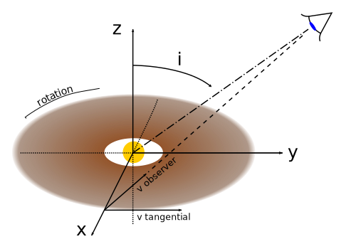
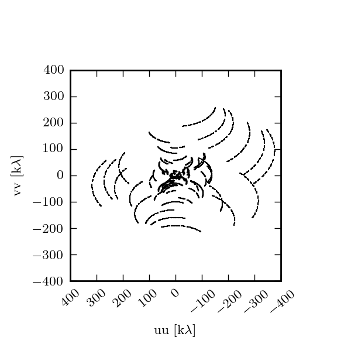

Understanding disk-based dynamical mass measurements
Mass is the fundamental property that determines a star's fate. Compared to the masses of their older cousins on the main sequence, however, the masses of young pre-main sequence stars are relatively uncertain. Fortunately, young stars have a unique advantage that we can exploit to precisely infer their mass: many often host a protoplanetary disk made of gas and dust, the site of future and ongoing planet formation. By modeling the rotation of this disk, we can dynamically "weigh" the host star(s). Circumstellar disks are typically mm-bright, which means that interferometers like the Atacama Large Millimeter Array (ALMA) and the Submillimeter Array (SMA) are ideal instruments for deriving stellar masses.
In this short intro, I will explain how we can use the kinematic fingerprint of the disk–imprinted by disk rotation–to derive precise estimates of the stellar mass.
Disk geometry and rotation
Astronomers typically model the structure of these protoplanetary disks as an axisymmetric disk with radial surface density defined by a power law and vertical structure set by hydrostatic equilibrium. As we will see, the orientation of the disk relative to us has a profound effect on what we observe. We define the inclination of the disk $i$ as the angle between the disk angular momentum axis and the observer: $0^\circ$ inclination means the disk is viewed face-on (appearing on the sky as a circle), while $90^\circ$ inclination means the disk is viewed edge-on (appearing on the sky as a thin line).

The disk orbits the central stellar mass under the force of gravity, yielding velocities dictated by Kepler's law. Although there is evidence that due to pressure support gas disks rotate at slightly sub-Keplerian speeds, creating a headwind for any larger dust aggregates and solids (the meter-sized barrier), this effect is negligible when determining stellar mass. For more information about disk structure, check out the lecture notes by Phil Armitage.
Disk emission mechanisms
Active young stars and their circumstellar disks can emit radiation at a host of wavelengths from the X-ray to the radio. When observing at sub-mm and radio wavelengths, there are two main sources of emission: Thermal continuum emission from the dust and spectral line emission from molecular species like carbon monoxide (CO).
Owing to the high spatial resolution of an interferometer, it is possible to spatially resolve many circumstellar disks. If we set the frequency sampling finely enough, then we will have a dataset that is both spatially resolved (an image showing emission on many scales) and spectrally resolved (an image for every frequency we observe). This set of images is called a data cube or a series of channel maps.
Dust emission
The intensity of continuum emission from the dust is related to the density and temperature of the emitting material. Because dust emission spans a continuum of frequencies, channel maps with fine frequency spacing yield little additional information–-typically these are summed together to yield greater sensitivity. Below is a movie showing what the dust emission looks like as we vary some of the key disk parameters: the radius of the disk, the inclination of the disk, and the stellar mass (stellar flux is kept fixed). In the movie, each parameter starts at an intermediate value, is then decreased to a minimum value, then increased to a maximum value, and then decreased back to the starting value. In this movie, the changes you will notice are due to variations in the radius and inclination of the disk.

Spectral line emission
When we observe the disk in narrow frequency channels at the location of spectral line emission, like CO $J=2-1$, we see the kinematic fingerprint of the disk. Each image shows the disk emission at a specific frequency, corresponding to the blue-shift (-velocity) or red-shift (+velocity) of the CO line, due to the projected velocity along the line of sight.
Why the morphology of the line emission appears as it does isn't immediately obvious. Primarily, the shape of the emission is a function of the Keplerian rotation: the inner part of the disk rotates faster than the outer part of the disk and thus imparts a more substantial velocity shift to the line emission from these regions of the disk.
As the parameters of the disk change, the projected velocity can change dramatically. For example, compare the difference between $i \approx 0^\circ$ and $i \approx 90^\circ$! If the disk is more inclined towards face on ($0^\circ$), the projection of the velocity along the line of sight will reduced and we will see more emission concentrated around 0 km/s.

Interferometers measure complex visibilities
Although we may be used to looking at emission in the image plane, interferometers measure the Fourier transform of the sky brightness in the visibility plane. This next movie shows what the Fourier transform of each channel map looks like. As you can see, the Fourier transform looks quite different from the image.

This Fourier plane is sampled according to the baselines formed between antennae separations. Below is a typical sampling pattern for an observation with the SMA.

Every dot represents a sampling of the Fourier transform in the UV plane. Some of the samplings are spaced so close together in space that they smear together into a line.